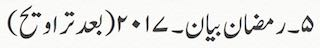
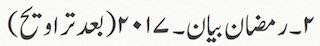

Urdu Audio Lectures by Shaykh Shakeel Ahmed Naqshbandi (db)
Ramazan Lectures [2026]
| Date | Ramazan Lectures (URDU) |
Download |
| MP3 Lectures | ||
| 19.03.26 | Zuhr Bayan - Ramazan [29] | |
| 18.03.26 | Esha Bayan - Taraweeh [29] | |
| 18.03.26 | Zuhr Bayan - Ramazan [28] | |
| 17.03.26 | Esha Bayan - Taraweeh [28] | |
| 17.03.26 | Zuhr Bayan - Ramazan [27] | |
| 16.03.26 | Esha Bayan - Taraweeh [27] | |
| 16.03.26 | Zuhr Bayan - Ramazan [26] | |
| 15.03.26 | Esha Bayan - Taraweeh [26] | |
| 15.03.26 | Zuhr Bayan - Ramazan [25] | |
| 14.03.26 | Esha Bayan - Taraweeh [25] | |
| 14.03.26 | Zuhr Bayan - Ramazan [24] | |
| 13.03.26 | Esha Bayan - Taraweeh [24] | |
| 13.03.26 | Zuhr Bayan - Ramazan [23] | |
| 12.03.26 | Esha Bayan - Taraweeh [23] | |
| 12.03.26 | Zuhr Bayan - Ramazan [22] | |
| 11.03.26 | Esha Bayan - Taraweeh [22] | |
| 11.03.26 | Zuhr Bayan - Ramazan [21] | |
| 10.03.26 | Esha Bayan - Taraweeh [21] | |
| 10.03.26 | Zuhr Bayan - Ramazan [20] | |
| 09.03.26 | Esha Bayan - Taraweeh [20] | |
| 09.03.26 | Zuhr Bayan - Ramazan [19] | |
| 08.03.26 | Esha Bayan - Taraweeh [19] | |
| 08.03.26 | Zuhr Bayan - Ramazan [18] | |
| 07.03.26 | Esha Bayan - Taraweeh [18] | |
| 07.03.26 | Zuhr Bayan - Ramazan [17] | |
| 06.03.26 | Esha Bayan - Taraweeh [17] | |
| 06.03.26 | Zuhr Bayan - Ramazan [16] | |
| 05.03.26 | Esha Bayan - Taraweeh [16] | |
| 05.03.26 | Zuhr Bayan - Ramazan [15] | |
| 04.03.26 | Esha Bayan - Taraweeh [15] | |
| 04.03.26 | Zuhr Bayan - Ramazan [14] | |
| 03.03.26 | Esha Bayan - Taraweeh [14] | |
| 03.03.26 | Zuhr Bayan - Ramazan [13] | |
| 02.03.26 | Esha Bayan - Taraweeh [13] | |
| 01.03.26 | Esha Bayan - Taraweeh [12] | |
| 01.03.26 | Zuhr Bayan - Ramazan [11] | |
| 28.02.26 | Esha Bayan - Taraweeh [11] | |
| 28.02.26 | Zuhr Bayan - Ramazan [10] | |
| 27.02.26 | Esha Bayan - Taraweeh [10] | |
| 27.02.26 | Zuhr Bayan - Ramazan [09] | |
| 26.02.26 | Esha Bayan - Taraweeh [09] | |
| 26.02.26 | Zuhr Bayan - Ramazan [08] | |
| 25.02.26 | Esha Bayan - Taraweeh [08] | |
| 25.02.26 | Zuhr Bayan - Ramazan [07] | |
| 24.02.26 | Esha Bayan - Taraweeh [07] | |
| 24.02.26 | Zuhr Bayan - Ramazan [06] | |
| 23.02.26 | Esha Bayan - Taraweeh [06] | |
| 23.02.26 | Zuhr Bayan - Ramazan [05] | |
| 22.02.26 | Esha Bayan - Taraweeh [05] | |
| 22.02.26 | Zuhr Bayan - Ramazan [04] | |
| 21.02.26 | Esha Bayan - Taraweeh [04] | |
| 21.02.26 | Zuhr Bayan - Ramazan [03] | |
| 20.02.26 | Esha Bayan - Taraweeh [03] | |
| 20.02.26 | Zuhr Bayan - Ramazan [02] | |
| 19.02.26 | Zuhr Bayan - Ramazan [01] | |
Ramazan Lectures [2024]
| Date | Ramazan Lectures (URDU) |
Download |
| MP3 Lectures | ||
| 2024 | Ramzan Bayan - [30] | |
| 2024 | Ramzan Bayan - [29] | |
| 2024 | Ramzan Bayan - [28] | |
| 2024 | Ramzan Bayan - [27] | |
| 2024 | Ramzan Bayan - [25] | |
| 2024 | Ramzan Bayan - [24] | |
| 2024 | Ramzan Bayan - [23] | |
| 2024 | Ramzan Bayan - [22] | |
| 2024 | Ramzan Bayan - [21] | |
| 2024 | Ramzan Bayan - [20] | |
| 2024 | Ramzan Bayan - [18] | |
| 2024 | Ramzan Bayan - [17] | |
| 2024 | Ramzan Bayan - [16] | |
| 2024 | Ramzan Bayan - [15] | |
| 2024 | Ramzan Bayan - [14] | |
| 2024 | Ramzan Bayan - [13] | |
| 2024 | Ramzan Bayan - [12] | |
| 2024 | Ramzan Bayan - [11] | |
| 2024 | Ramzan Bayan - [10] | |
| 2024 | Ramzan Bayan - [09] | |
| 2024 | Ramzan Bayan - [08] | |
| 2024 | Ramzan Bayan - [07] | |
| 2024 | Ramzan Bayan - [06] | |
| 2024 | Ramzan Bayan - [05] | |
| 2024 | Ramzan Bayan - [03] | |
| 2024 | Ramzan Bayan - [02] | |
| 2024 | Ramzan Bayan - [01] | |
Ramazan Lectures [2023]
| Date | Ramazan Lectures (URDU) |
Download |
| MP3 Lectures | ||
| 2023 | Ramzan Bayan - [29] | |
| 2023 | Ramzan Bayan - [28] | |
| 2023 | Ramzan Bayan - [27] | |
| 2023 | Ramzan Bayan - [26] | |
| 2023 | Ramzan Bayan - [25] | |
| 2023 | Ramzan Bayan - [24] | |
| 2023 | Ramzan Bayan - [22] | |
| 2023 | Ramzan Bayan - [21] | |
| 2023 | Ramzan Bayan - [20] | |
| 2023 | Ramzan Bayan - [19] | |
| 2023 | Ramzan Bayan - [18] | |
| 2023 | Ramzan Bayan - [17] | |
| 2023 | Ramzan Bayan - [16] | |
| 2023 | Ramzan Bayan - [15] | |
| 2023 | Ramzan Bayan - [14] | |
| 2023 | Ramzan Bayan - [13] | |
| 2023 | Ramzan Bayan - [12] | |
| 2023 | Ramzan Bayan - [11] | |
| 2023 | Ramzan Bayan - [10] | |
| 2023 | Ramzan Bayan - [09] | |
| 2023 | Ramzan Bayan - [08] | |
| 2023 | Ramzan Bayan - [07] | |
| 2023 | Ramzan Bayan - [06] | |
| 2023 | Ramzan Bayan - [05] | |
| 2023 | Ramzan Bayan - [04] | |
| 2023 | Ramzan Bayan - [03] | |
| 2023 | Ramzan Bayan - [02] | |
| 2023 | Ramzan Bayan - [01] | |
Ramazan Lectures [2022]
| Date | Ramazan Lectures (URDU) |
Download |
| MP3 Lectures | ||
| 2022 | Ramzan Bayan - [30] | |
| 2022 | Ramzan Bayan - [29] | |
| 2022 | Ramzan Bayan - [28] | |
| 2022 | Ramzan Bayan - [27] | |
| 2022 | Ramzan Bayan - [26] | |
| 2022 | Ramzan Bayan - [25] | |
| 2022 | Ramzan Bayan - [24] | |
| 2022 | Ramzan Bayan - [23] | |
| 2022 | Ramzan Bayan - [22] | |
| 2022 | Ramzan Bayan - [21] | |
| 2022 | Ramzan Bayan - [20] | |
| 2022 | Ramzan Bayan - [19] | |
| 2022 | Ramzan Bayan - [18] | |
| 2022 | Ramzan Bayan - [17] | |
| 2022 | Ramzan Bayan - [16] | |
| 2022 | Ramzan Bayan - [15] | |
| 2022 | Ramzan Bayan - [14] | |
| 2022 | Ramzan Bayan - [13] | |
| 2022 | Ramzan Bayan - [12] | |
| 2022 | Ramzan Bayan - [11] | |
| 2022 | Ramzan Bayan - [10] | |
| 2022 | Ramzan Bayan - [09] | |
| 2022 | Ramzan Bayan - [08] | |
| 2022 | Ramzan Bayan - [07] | |
| 2022 | Ramzan Bayan - [06] | |
| 2022 | Ramzan Bayan - [05] | |
| 2022 | Ramzan Bayan - [04] | |
| 2022 | Ramzan Bayan - [03] | |
| 2022 | Ramzan Bayan - [02] | |
| 2022 | Ramzan Bayan - [01] | |
Ramazan Lectures [2021]
| Date | Ramazan Lectures (URDU) |
Download |
| MP3 Lectures | ||
| 2021 | Ramzan Bayan - [26] | |
| 2021 | Ramzan Bayan - [25] | |
| 2021 | Ramzan Bayan - [24] | |
| 2021 | Ramzan Bayan - [23] | |
| 2021 | Ramzan Bayan - [22] | |
| 2021 | Ramzan Bayan - [21] | |
| 2021 | Ramzan Bayan - [20] | |
| 2021 | Ramzan Bayan - [19] | |
| 2021 | Ramzan Bayan - [18] | |
| 2021 | Ramzan Bayan - [17] | |
| 2021 | Ramzan Bayan - [16] | |
| 2021 | Ramzan Bayan - [15] | |
| 2021 | Ramzan Bayan - [14] | |
| 2021 | Ramzan Bayan - [13] | |
| 2021 | Ramzan Bayan - [12] | |
| 2021 | Ramzan Bayan - [11] | |
| 2021 | Ramzan Bayan - [10] | |
| 2021 | Ramzan Bayan - [09] | |
| 2021 | Ramzan Bayan - [08] | |
| 2021 | Ramzan Bayan - [07] | |
| 2021 | Ramzan Bayan - [06] | |
| 2021 | Ramzan Bayan - [05] | |
| 2021 | Ramzan Bayan - [04] | |
| 2021 | Ramzan Bayan - [03] | |
| 2021 | Ramzan Bayan - [02] | |
| 2021 | Ramzan Bayan - [01] | |
Ramazan Lectures [2020]
| Date | Ramazan Lectures (URDU) |
Download |
| MP3 Lectures | ||
| 2020 | Ramzan Bayan - [01] | |
| 2020 | Ramzan Bayan - [02] | |
| 2020 | Ramzan Bayan - [03] | |
| 2020 | Ramzan Bayan - [04] | |
| 2020 | Ramzan Bayan - [05] | |
| 2020 | Ramzan Bayan - [06] | |
| 2020 | Ramzan Bayan - [07] | |
| 2020 | Ramzan Bayan - [08] | |
| 2020 | Ramzan Bayan - [09] | |
| 2020 | Ramzan Bayan - [10] | |
| 2020 | Ramzan Bayan - [11] | |
| 2020 | Ramzan Bayan - [12] | |
| 2020 | Ramzan Bayan - [13] | |
| 2020 | Ramzan Bayan - [14] | |
| 2020 | Ramzan Bayan - [15] | |
| 2020 | Ramzan Bayan - [16] | |
| 2020 | Ramzan Bayan - [17] | |
| 2020 | Ramzan Bayan - [18] | |
| 2020 | Ramzan Bayan - [19] | |
| 2020 | Ramzan Bayan - [20] | |
| 2020 | Ramzan Bayan - [21] | |
| 2020 | Ramzan Bayan - [22] | |
| 2020 | Ramzan Bayan - [23] | |
| 2020 | Ramzan Bayan - [24] | |
| 2020 | Ramzan Bayan - [25] | |
| 2020 | Ramzan Bayan - [26] | |
| 2020 | Ramzan Bayan - [27] | |
| 2020 | Ramzan Bayan - [28] | |
| 2020 | Ramzan Bayan - [29] | |
| 2020 | Ramzan Bayan - [30] | |
Ramazan Lectures [2017]
| Date | Ramazan Lectures (URDU) |
Download | |
| MP3 Lectures | |||
| 07.06.2017 | Ramzan Bayan (After Tarawih) | ||
| 06.06.2017 | Ramzan Bayan (After Tarawih) | ||
| 05.06.2017 | Ramzan Bayan (After Tarawih) | ||
| 04.06.2017 | Ramzan Bayan (After Tarawih) | ||
| 03.06.2017 | Ramzan Bayan (After Tarawih) | ||
| 02.06.2017 | Ramzan Bayan (After Tarawih) |
 |
|
| 01.06.2017 | Ramzan Bayan (After Tarawih) | ||
| 30.05.2017 | Ramzan Bayan (After Tarawih) | ||
| 29.05.2017 | Ramzan Bayan (After Tarawih) |
 |
|
| 28.05.2017 | Ramzan Bayan (After Tarawih) | ||
| 05.06.2017 | Ramzan Bayan (After Asar) | ||
| 04.06.2017 | Ramzan Bayan (After Asar) | ||
| 03.06.2017 | Ramzan Bayan (After Asar) | ||
| 02.06.2017 | Ramzan Bayan (After Asar) | ||
| 01.06.2017 | Ramzan Bayan (After Asar) | ||
| 30.05.2017 | Ramzan Bayan (After Asar) | ||
| 29.05.2017 | Ramzan Bayan (After Asar) | ||
| 28.05.2017 | Ramzan Bayan (After Asar) | ||
NOTE: To download audio (mp3) files. Right click on download
( )
image and Click on Save Target As...
)
image and Click on Save Target As...